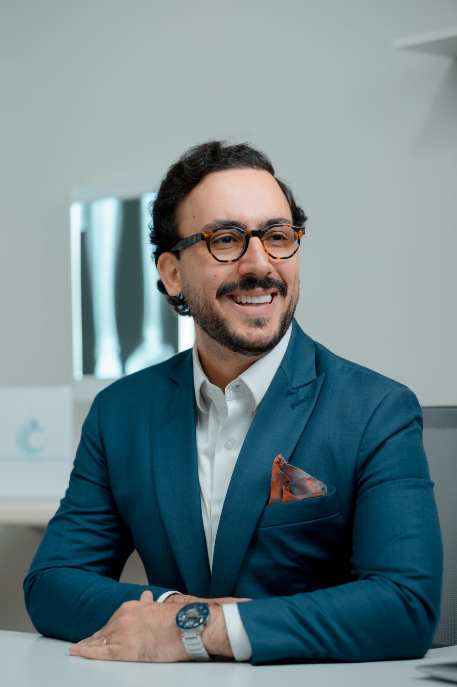
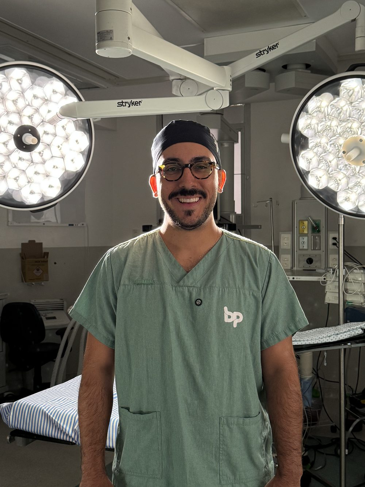

Ortopedista e traumatologista com especialização em Cirurgia de Quadril (RQE 95895). Um cirurgião dedicado a devolver o seu movimento.
Formado em medicina com residência em Ortopedia e Traumatologia e especialização em Cirurgia de Quadril em São Paulo, o Dr. Pedro dedica sua carreira ao tratamento da dor no quadril, da consulta criteriosa ao tratamento definitivo, cirúrgico ou não.
Com o título de especialista em quadril (RQE 95895), coordenou equipes com mais de 40 profissionais e atua em hospitais de referência da capital, realizando cirurgias de prótese, preservação articular e trauma.

Consulta sem pressa.
Cada paciente é único. Por isso, o atendimento começa com uma avaliação criteriosa, exame clínico completo e análise detalhada dos exames de imagem.
Cirurgia apenas quando realmente indicada.
O objetivo não é operar. É encontrar o melhor caminho para devolver movimento, função e qualidade de vida.
Técnicas modernas e atualizadas.
Quando a cirurgia é necessária, utilizamos técnicas atuais que buscam mais precisão, menor tempo de internação e uma recuperação mais previsível.
Acompanhamento de verdade.
O cuidado não termina na cirurgia. O pós-operatório é acompanhado de perto, com suporte integrado e fisioterapia, do procedimento à recuperação.
Aqui, você não é apenas tratado. Você é acompanhado.
Conheça os tratamentos →
Existe diagnóstico. Existe tratamento. Existe solução.
O primeiro passo é uma avaliação especializada. Envie uma mensagem e agende sua consulta.
Unidade Santana (convênios) · Unidade Tatuapé (particular e reembolso)